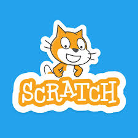

Who am I?
A motivated and hard working individual who has a strong passion for health and fitness.
BSc in Kinesiology (2026) | University of Calgary
Welcome to my site. Here you’ll find a collection of my work, projects, and interests.
A motivated and hard working individual who has a strong passion for health and fitness.
Python is a programming language used to tell a computer what to do, written in a way that’s easy for humans to read and understand. In this project python is used for data analysis.

Scratch is a block based programming language developed by MIT that allows users to create interactive games. It uses a visual coding system, making it easy to understand programming concepts without needing prior coding experience.
Dartfish is a motion analysis software used in sport and movement to break down movement patterns, analyze technique, and improve athletic performance through video feedback.
Here you will find all work and volunteer experiences.
May 2023 – Present
Working as a porter at Foothills Medical Centre has strengthened my ability to remain calm in high-pressure environments, adapt communication to individual patient needs, support efficient care delivery, and demonstrate empathy in sensitive situations.
June 2021 – Present
As a server at Fionn MacCool’s, I developed strong communication, problem-solving, multitasking, and teamwork skills while managing customer needs and creating a welcoming environment.
June 2019 – Present
Teaching taekwondo has provided leadership experience through lesson planning, mentoring students of all ages, adapting to different learning styles, and tracking individual progress.
2010 – 2020
Competing at provincial, national, and international levels developed discipline, resilience, time management, and the ability to implement feedback effectively.
May 2024 – Present
Supporting children with disabilities through inclusive physical activity has strengthened my ability to promote confidence, encourage participation, collaborate with others, and create a safe environment.
May 2025 – Present
Working with children with serious illnesses has developed my ability to provide emotional support, facilitate play-based engagement, adapt to individual needs, and contribute to a compassionate environment.
I’m always open to discussing opportunities, volunteering, or connecting. Feel free to reach out.